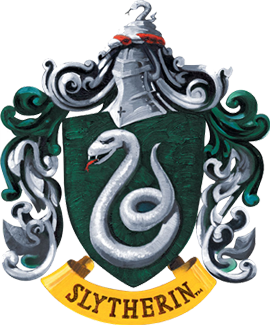

Opiekun domu:
Barwy:
Zwierzę z herbu:
Założyciel:
Mieszkańcy:
Relikwia założyciela:
Duch domu:
Wejście:
Miejsce:
Cenione cechy charakteru:
Severus Snape
Zielony i Biały
Wąż
Salazar Slytherin
Ślizgoni
Medalion Salazara Slytherina
Krwawy Baron
Kamienna Ściana
Lochy Hogwartu
spryt, ambicja, czystość krwi, zaradność, przebiegłość